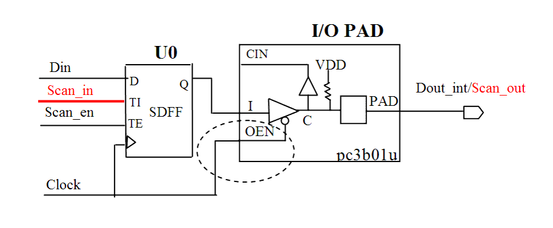

| Description | I/O cells must be fully controllable during test. The I/O cell behavior must not be impacted by the test clock because this can decrease test coverage. |
| Policy | DESIGN |
| Ruleset | DFT |
| Language | VHDL/Verilog |
| Type | Hardware |
| Severity | Error |
This is an example of invalid Verilog code, followed by a circuit diagram that illustrates the problem:
module ntl_dft27_top(Clock, Scan_en, Scan_in, Din, Dout); input Clock, Scan_en, Scan_in, Din; output Dout; reg Dout_temp1; // Scan DFF -- SDFF SDFF U0(.D(Din), .CP(Clock), .TI(Scan_in), .TE(Scan_en), .Q(Dout_temp1)); // I/O pad cell - pc3b01u -- 3.3V CMOS 3-State I/O Pads with // Pull-up Resistor pc3b01u U1(.I(Dout_temp1), .OEN(Clock), .PAD(Dout), .CIN( )); // NTL_DFT27 fires -- clock controls I/O cell endmodule